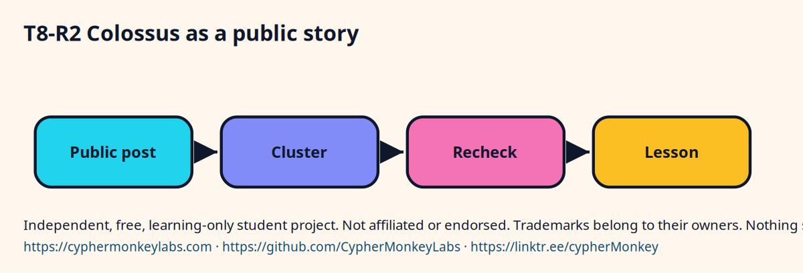

Compute, cloud, and a capstone · L2 · 15 min
Colossus as a public story
Learn in five minutes
- Colossus is the public name xAI has used for a large NVIDIA GPU cluster.
- Descriptions of its size and site have been published and later updated.
- This page states no current GPU count.
- Confirm the company's own page before you repeat any figure.
- The lesson is scale and lead time, not a number to memorize.
Write the sentence you are allowed to say: public posts have described a very large cluster, and the count is something you re-check. Then stop.
Visual



The allowed sentence
- Open the company's public site when you need a figure.
- If you cannot open it today, write 'confirm before relying'.
- Do not type a GPU count from memory onto this page's behalf.
- Cite the site, not a screenshot you cannot date.
Quiz
Ecosystem
- Confirm before relying
- The mark this lab uses when a public figure was not re-checked today.
Sisters: Schedulers, Regions, Key management, Risk frameworks.
A cloud endpoint can replace a local runner behind the same notebook and the same eval.
Pin the endpoint, the region, and the model id the day you check them.
Config
- Write the goal in one sentence.
- Name the input and the allowed output.
- Save the trace next to the result.
Troubleshooting
- The answer looks fluent and is wrong. Check whether a source passage actually contains the claim.
- The loop never stops. Set a step cap and stop when the tool result repeats.
Sources and go deeper
- xAI public site vendor confirm The site root returned 403 on 2026-10. last checked 2026-10
- NVIDIA H100 GPU product page. Confirm any number before quoting it. vendor last checked 2026-10
- Colossus supercomputer page on the xAI site vendor confirm This URL returned 403 on 2026-10, so it is not linked. last checked 2026-10
- Graphics processing unit — Wikipedia wikipedia last checked 2026-10
- Hopper (microarchitecture) — Wikipedia wikipedia The H100 title redirects to the Hopper page. last checked 2026-10